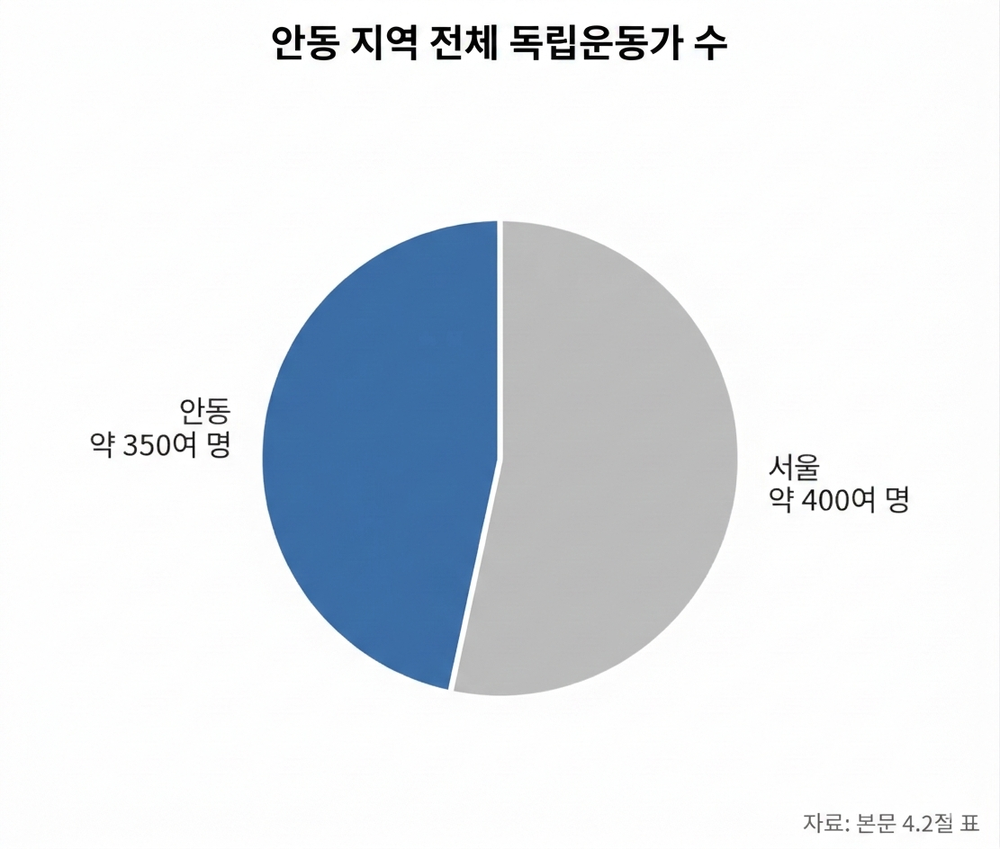
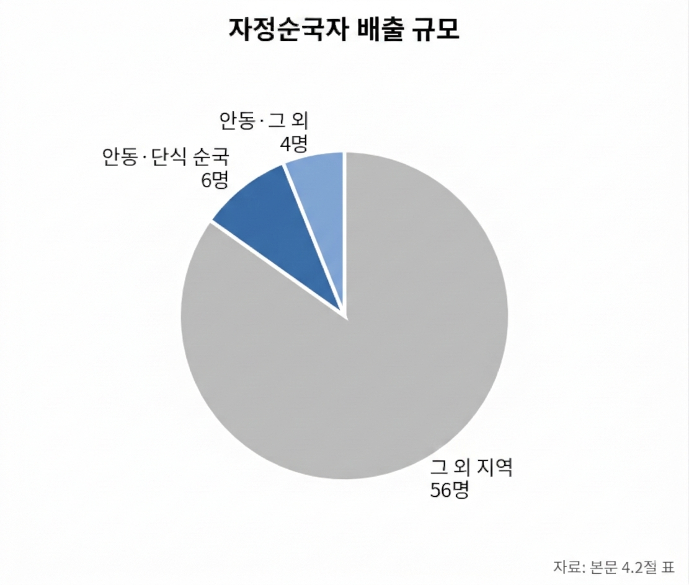
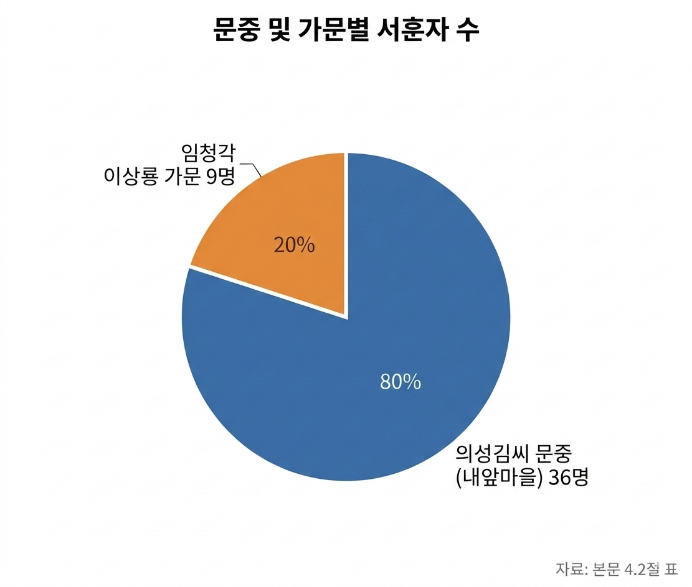
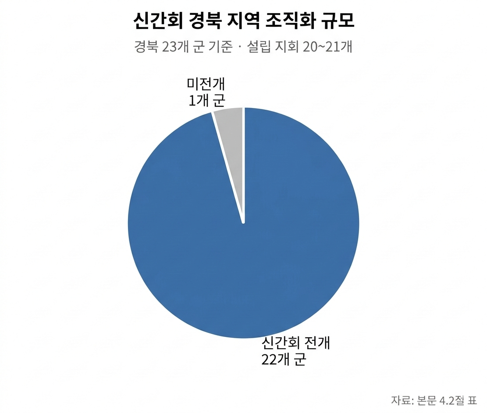

안동 내앞마을 및 풍산 일대 사회주의 계열 독립운동의 재조명과 서훈 과제
1. 서론: 안동 독립운동의 역사적 위상과 연구 목적
경상북도 안동 지역은 한국 근현대 독립운동사에서 독보적이면서도 대단히 상징적인 역사적 위상을 점하고 있다. 안동 출신 포상 독립유공자 및 공훈 인정 수치만 대략 350여 명에 달하며, 이는 수도 서울(400여 명)에 이어 전국 기초·광역 지자체를 통틀어 2위라는 압도적인 수치이다. 이러한 수치적 집계보다 학술적으로 더욱 중요한 점은 안동 독립운동이 성리학적 양반 사회의 고수적 전통에서 출발하여 식민지현실 타파를 위한 현대적 항일 독립투쟁으로 변모해 간사상사적 역동성의 본향이라는 사실이다. 일제의 국권 피탈에 맞서 절의를 지키고자 자결한 '자정순국자(自靖殉國者)'가 전국 66명 중 10명(이 중 6명은 단식 순국)에 이를 정도로 안동의 유교적 선비 정신은 서슬 푸른 항일 투쟁의 동력으로 작동했다.
그러나 단순한 순국자의 정절이나 독립운동가 배출 수치라는 단선적 통계를 넘어 안동 독립운동이 가진 진정한 역사적 중대성을 파악하기 위해서는, 유교적 보수주의에서 출발한 구국 의지가 식민지현실의 모순을 통찰하며 근대 애국계몽, 만주 무장투쟁, 나아가 1920년대 사회주의, 아나키즘, 노동·농민운동으로 진화·확장해 간 연쇄적 사상 변용 과정을 정밀히 분석해야 한다.
퇴계학의 본향으로서 성리학의 핵심 가치인 '의(義)'와 '민본(民本)' 정신은 식민지 민중의 현실적 고통과 접목되면서 1920년대 제국주의 타도와 민중해방을 지향하는 계급·민족해방운동으로 비약적인 사상적 도약을 이루어냈다. 그럼에도 불구하고 해방 후 장기간 고착화된 남북 분단 체제와 반공주의적 국가 담론은 이러한 사상적 확장의 주역이었던 사회주의 계열 독립투쟁의 공적을 역사적 무대 뒤로 소외시키거나 은폐하는 결과를 초래했다. 따라서 이념적 잣대로 인해 왜곡된 사회주의 계열 독립운동을 정밀하게 재조명하고 공정한 서훈 기준을 정립하는 것은, 안동 독립운동사가 지닌 혁신적·전위적 본질을 완전하게 복원하고 한국 독립운동사의 불균형을 바로잡기 위한 시급한 학술적·사회적 과제라 할 수 있다.
이러한 사상적 확장과 투쟁 노선의 다변화를 입체적으로 이해하기 위해서는, 보수 유학의 본향이었던 안동에서 기존의 관념적 틀을 깨부수고 근대 교육과 항일 구국 투쟁에 앞장선 '혁신 유림(革新儒林)'의 출범 배경과 그 사상사적 변용 메커니즘을 시초부터 살필 필요가 있다.
2. 내앞마을과 풍산 일대의 혁신 유림 및 독립운동 노선의 다변화
안동 지역 항일 운동의 사상적 진화는 전통 성리학의 '의(義)' 관념이 식민지 엄혹한 현실 속에서 어떻게 재해석되고 극복되었는가를 보여주는 독보적인 사상사적 사례이다. 조선 후기 위정척사(衛正斥邪) 운동에 머물던 보수 유림의 한계를 인식하고, 근대적 학문 수용과 인재 양성, 그리고 국권 회복 투쟁을 유기적으로 결합한 '혁신 유림'의 등장은 안동 독립운동사를 민족주의를 넘어 사회주의 및 민중해방 운동으로 확장시킨 결정적 사상적 교두보였다.
2.1. 협동학교 설립과 혁신 유림으로의 거듭남
1907년 안동군 임하면 천전리(내앞마을)에 설립된 '협동학교(協東學校)'는 영남 지역 최초의 3년제 근대 중등 교육기관으로, 안동 유림이 보수적·관념적 틀을 깨고 근대 애국계몽운동으로 연착륙했음을 알리는 역사적 이정표였다. 당초 전통 유교 질서를 고수하던 문중 원로들과 보수 유림은 신학문 수용과 근대 교육기관 설립을 사문난적(斯文亂賊)의 행위로 간주하며 거세게 반발했고 극심한 문중 내 갈등이 야기되었다.
이 엄혹한 상황에서 반전의 계기를 마련한 인물은 백하(白下) 김대락(1845~1914) 선생이었다. 당시 예순다섯의 고령이었던 백하 선생은 《대한협회보》 등 근대 매체를 접하며 세계 정세를 파악하고 근대적 각성을 이루어냈다. 백하 선생은 "공자와 맹자의 가르침보다 나라를 찾는 일이 시급하다"는 결단 아래 자택을 학교 가매장으로 선뜻 내놓는 등 협동학교 설립을 전폭적으로 지원함으로써 보수적 유림에서 혁신 유림으로 전격 거듭났다.
백하 선생의 결단과 함께 동산(東山) 류인식(1865 ~~1928), 석주(石洲) 이상룡(1858~~ 1932), 일송(一松) 김동삼(1878~1937) 선생 등 소장파 유학자들은 사상적 도약을 이루며 학교 설립과 운영을 주도했다. 이 과정에서 류인식 선생은 생부와 스승으로부터 파문과 의절을 당하는 개인적 비극을 감수해야 했고, 근대 학문에 반발한 예천 지역 보수 의병의 습격으로 협동학교 교사와 학생 등 3명이 살해되는 참혹한 탄압을 받았다. 그럼에도 불구하고 혁신 유림은 개화와 계몽을 통한 국권 회복의 의지를 꺾지 않았으며, 협동학교는 향후 만주 독립운동 기지 개척과 국내외 항일 투쟁을 주도할 수많은 인재를 배출한 전위적 산실로 자리매김했다.
2.2. 민족주의에서 사회주의·아나키즘으로의 사상적 확장
1910년 국권 피탈 이후 혁신 유림은 일제의 식민 통치 체제 아래 기득권을 누리는 안일함을 거부하고 만주 망명을 통한 무장 투쟁의 길을 선택했다. 석주 이상룡, 일송 김동삼, 백하 김대락, 동산 류인식 선생 등은 집안의 모든 재산을 처분하고 서간도로 망명하여 신흥무관학교의 전신인 경학사와 부속 학교들을 설립, 무장 독립군 양성에 사력을 다했다. 특히 이상룡 선생은 1925년 대한민국 임시정부 초대 국무령에 취임하여 독립운동의 최고 지도자로 헌신했다.
1920년대에 이르러 안동의 항일 운동은 1세대 혁신 유림의 민족주의 노선에 머물지 않고, 러시아 혁명과 세계적인 반제국주의 사상의 영향 아래 사회주의, 아나키즘, 농민·노동운동으로 사상적 외연을 급격히 확장했다. 퇴계학의 핵심 사상인 '민본(民本)' 정신은 식민지 지배 구조 아래 노예적 삶을 강요받던 피지배 민중(농민·노동자)의 현실과 대면하면서 식민지 지배 계급 및 제국주의 체제 자체를 타파하려는 계급 해방이자 민족 해방 투쟁으로 진화한 것이다.
사회주의 및 노동·농민운동 계열: 안동 풍천면 가곡리 출신의 권오설(1899 ~~1930) 선생은 안동주요 조선물산장려회, 풍천농민조합 등을 조직하여 민중운동을 이끌었고, 조선공산당 화요회 계열의 핵심 간부로서 1926년 6·10만세운동을 총지휘하는 등 국내 사회주의 독립운동의 정점에 섰다. 아울러 이준태(1892~~ ?), 김남수(1899~1945) 선생 등은 농민·노동자의 사회적·경제적 권익 쟁취와 민족 해방을 결합한 사회주의 투쟁을 정력적으로 전개했다.
의열투쟁 계열: 김지섭(1885 ~~1928), 김시현(1883~~ 1966) 선생 등은 의열단(義烈團)에 투신하여 도쿄 제국주의 심장부에 폭탄을 투척하는 등 타협 없는 의열투쟁을 펼쳤다.
이러한 독립운동 노선의 다변화와 사상적 급진화 뒤에는 안동 반가(班家)가 솔선수범한 노블레스 오블리주(Noblesse oblige)의 강렬한 전통이 작용하고 있었다. 의성김씨 문중이 집성촌을 이룬 내앞마을에서는 독립유공자 포상자만 36명이 배출되었고, 이상룡 선생의 가문(임청각)에서는 당숙을 포함하여 가문 내에서만 총 9명의 독립운동가가 서훈을 받았다.성리학적 의(義) 관념에서 출발한 안동 유림의 도덕적 의무감은 애국계몽(협동학교)을 거쳐 만주 무장투쟁(신흥무관학교)으로, 그리고 1920년대 사회주의 및 아나키즘에 기반한 제국주의 타도·민중해방 투쟁으로 선순환적 진화를 이루었다. 즉, 급진적 유교 전통(Neo-Confucian Radicalism)이 반제국주의 계급 해방론(Anti-Imperialist Class Liberation)으로 이행한 본 사례는 안동의 항일 운동이 결코 과거 고수적인 유학자들의 한풀이 운동이 아니라, 시대를 선도한 현대적 민족해방운동이었음을 학술적으로 증명해 준다.이처럼 고양된 사상적 역량과 견고한 조직적 자산은 1920년대 후반 민족협동전선 운동인 신간회(新幹會) 안동지회의 결성과 주도적 활동으로 구체화되어 결실을 맺게 된다.
3. 신간회 안동지회의 결성과 사회주의 계열 독립운동가의 주도적 역할
1927년 출범한 신간회는 민족주의 세력과 사회주의 세력이 식민 통치에 맞서 공동의 전선을 구축한 일제 강점기 최대의 좌우합작 민족유일당 운동 단체였다. 최근 발굴·공개된 소장 유물 자료들은 신간회 안동지회가 단순한 지방 하부 조직에 머문 것이 아니라, 신간회 전체 운동사에서 사상적 담론을 주도하고 재정적·조직적 버팀목 역할을 수행했던 전국 최상위 거점이었음을 확실히 검증해 준다.
3.1. 소장 유물 분석을 통한 안동지회의 위상 검증
경북독립운동기념관이 공개한 1927년 《국내외 정세보고서》와 1929년 《신간회 안동지회 영수증》은 신간회 안동지회의 사상적 깊이와 조직적 실질성을 입증하는 1차 학술 사료이다.사료 1: 1927년 국내 정세보고 (권오설 유품)"금년(1927년) 2월 15일 신간회(新幹會) 창립은 조선의 독립운동에 있어서 일대 전환을 의미한다. 더러는 지방열(地方熱)이라는 것으로, 더러는 분파분쟁 때문에 항상 분산되어 있었던 우리 전 민족의 힘은 비로소 한 기치 아래에 총 역량을 모으게 되었다."사료 2: 1927년 국제 정세보고 (권오설 유품)"현재 제국주의 국가는 지배 계급의 세력과 피지배 계급의 세력의 양대 세력이 대립하여 서로 항거·항쟁하고 있다. 피지배 계급 세력과 피지배 민족 세력은 결코 배치·모순되는 것은 아니다. 두 세력의 항쟁 목표가 동일함으로 어디까지나 서로 협동하고 합류하지 않아서는 안 된다."
국내외 정세보고서의 사상사적 및 구조적 가치: 6·10만세운동을 기획하고 주도한 풍천면 가곡리 출신 권오설 선생의 유품인 이 문서(국내 2장, 국외 2장)는 국내에서 유일하게 발굴된 신간회 창립 당시의 민족유일당 사상 사료이다. 권오설 등 사회주의 계열 투사들은 제국주의 수탈에 맞서는 '피지배 계급의 세력'과 '피지배 민족의 세력'이 결코 충돌하지 않으며, 제국주의 타도라는 동일한 목표를 향해 "협동하고 합류해야 한다"는 정당성을 논리적으로 정립했다.
1928년 안동지회 예산안 수록의 역사적 의미: 본 정세보고서 문서 내부에는 1928년도 신간회 안동지회의 예산안이 함께 정밀하게 기록되어 있다. 중앙의 독립운동 정세 분석 및 민족유일당 이론 보고서에 특정 지방 지회(안동지회)의 예산안이 수록되어 있다는 사실은, 안동지회가 중앙의 지침을 수동적으로 이행하던 단순 하부 지부가 아니라, 중앙의 사상 수립과 재정 기획을 총괄·지원하던 독립운동의 사상적·재정적 핵심 거점 이었음을 결정적으로 증명한다.
신간회 안동지회 영수증의 조직적 실체성: 내앞마을 출신 독립운동가 김공망(본명 김상호) 선생의 유품인 이 영수증은 1929년 2월(52원)과 3월 16일(1원) 신간회 안동지회 재정부 총무간사가 김상호에게 발행한 공식 의연금 영수증이다. 당시 재정부 총무간사는 내앞마을 출신 김정식으로 추정되며, 그는 1929년 안동지회 간사, 조사부원, 집행위원으로 중추적 역할을 수행했다. 이는 안동지회가 정기적인 회원 갹출과 투명한 재정 관리 시스템을 갖춘 견고한 조직체였음을 입증한다.
3.2. 경북 지역 신간회 운동의 전국적 영향력 평가
경상북도 지역의 신간회 운동은 양적 규모와 질적 역량 모두에서 전국을 압도했다. 1927년 6월 김천지회 설립을 시작으로 당시 강원도 관할이던 울진군을 포함하여 경북 23개 군 중 22개 군에서 지회 운동이 활발히 전개되었으며, 총 20~21개 지회가 공식 설립되었다.특히 안동지회의 회원 규모와 조직적 역량은 평양지회에 버금가는 전국 2위의 규모 를 자랑했다. 보수적 학문 도시로 알려진 안동이 평양과 같은 대도시를 제치고 전국 최대 규모의 신간회 조직을 형성할 수 있었던 동인은, 혁신 유림 전통과 1920년대 청년·사회주의 운동가들이 보여준 탁월한 조직력과 좌우를 아우르는 사상적 포용력 덕분이었다. 발굴된 유물과 정세보고서는 안동지회가 신간회 전체를 받치는 조직적·사상적 버팀목이었음을 실증한다.그러나 이처럼 빛나는 민족유일당 운동의 유산과 조직적 기여에도 불구하고, 해방 후 도래한 냉전 체제와 이념적 대립은 사회주의 계열 독립운동가들의 공적을 은폐하고 왜곡하는 역사적 비극을 낳고 말았다.
4. 해방 후 사회주의 계열 독립운동가의 소외·은폐 및 서훈 현황 분석
광복 이후 남북 분단 구조의 고착화와 반공주의 중심의 국가 정통성 담론은 한국 독립운동사 서술에서 심각한 편향성을 초래했다. 그 결과 안동 내앞마을과 풍산 일대를 중심으로 격렬하게 전개되었던 사회주의 및 아나키즘 계열 독립운동가들의 공적은 오랫동안 제대로 된 평가를 받지 못하거나 역사적 기록에서 배제되어 왔다.
4.1. 이념적 편향에 따른 기억의 왜곡과 역사적 소외
권오설, 이준태, 김남수 선생 등 안동이 배출한 대표적인 사회주의 계열 항일 투사들은 일제 강점기 식민 지배에 맞서 목숨을 바쳐 투쟁했음에도 불구하고, 해방 후 '사회주의 이력'이라는 주홍글씨로 인해 공적이 비하되거나 역사적 기억에서 소외되었다.이러한 소외 메커니즘은 국가 차원의 보훈 배제에 그치지 않고, 가문과 지역 사회 내부로 침투하여 깊은 상흔을 남겼다. 안동의 수많은 양반 문중조차 해방 후 연좌제와 이념적 탄압을 우려한 나머지, 사회주의 계열 친족의 독립운동 사료를 스스로 숨기거나 폐기해야 했다. 문중의 족보나 문집 등 공식 기록에서 사회주의 투사들의 이름이 삭제되거나 은폐되는 비극이 연출되었으며, 유교적 전통과 혁신 정신이 절묘하게 조화되었던 안동 독립운동의 다채로운 스펙트럼은 '보수 유림의 순국'이라는 단색적 이미지 속에 갇히게 되었다.
4.2. 안동 지역 독립유공자 및 서훈 현황 통계 분석
문헌 사료와 정부 공인 통계 자료를 바탕으로 안동 지역 독립운동 및 계열별 서훈 현황을 정리한 결과는 아래와 같다.




구분 / 분석 항목 | 통계 및 세부 내용 (출처 사료 기반) | 학술적 시사점 및 대조 분석 |
|---|---|---|
안동 지역 전체 독립운동가 수 | 약 350여 명 (서울 ~400여 명에 이어 전국 2위의 배출 규모) | 전국 최고의 독립운동 거점으로서 안동의 위상을 증명 |
자정순국자 배출 규모 | 총 10명 (전국 66명 중 최다 수준, 이 중 6명은 단식 순국) | 보수 유림의 유교적 '의(義)'의 실천과 정절 의식의 극치 |
의성김씨 문중 서훈자 수 | 총 36명 (임하면 천전리 내앞마을 중심 배출) | 문중 차원의 노블레스 오블리주와 혁신 유림 정신의 입증 |
임청각(이상룡 가문) 서훈자 수 | 총 9명 (석주 이상룡, 아우, 조카, 아들, 손자, 손부, 당숙 포함) | 가문 전체가 독립운동에 투신한 한국 독립운동사의 독보적 사례 |
신간회 경북지역 조직화 규모 | 23개 군 중 22개 군 전개 (20~21개 지회 설립, 전국 최고 수준) | 경북 지역이 신간회 운동의 전국적 핵심 거점이었음을 증명 |
사회주의/아나키즘 계열 서훈 실태 | 권오설, 이준태, 김남수 등 핵심 투사들의 서훈 지연, 저평가 및 일부 누락 | 민족주의·보수 유림 위주의 서훈 정책과 대조되는 이념적 편향성 정면 노출 |
상기 통계 자료는 안동 독립운동의 양적·질적 위엄을 유감없이 보여주는 동시에, 해방 후 서훈 정책이 지녀온 심각한 이념적 불균형을 적나라하게 대조해 준다. 자정순국자나 임청각 가문 등 보수 유림 및 민족주의 계열에 대한 서훈과 평가가 높게 이루어진 반면, 6·10만세운동의 주역 권오설 선생을 비롯하여 신간회 안동지회를 이끌고 농민·노동운동에 투신했던 사회주의 계열 투사들의 공적은 해방 후 사상적 잣대에 가려져 서훈이 현저히 지연되거나 훈격이 저평가되었다.독립운동의 평가 기준은 '해방 후의 이념'이 아니라 '일제 강점기 국권 회복과 민족 해방을 향한 헌신의 진정성'에 두어져야 한다. 따라서 이념적 편향을 극복하고 사회주의 계열 독립투사들에 대한 공정한 서훈 기준을 정립하는 것은 왜곡된 독립운동사를 바르게 정립하기 위한 필수적 당면 과제이다.이러한 역사적 소외를 극복하고 안동 독립운동의 완전한 전모를 복원하기 위해서는 올바른 역사 의식의 회복과 함께 정부 및 지자체 차원의 구체적인 재평가 과제가 추진되어야 한다.
5. 결론: 혁신 유림 정신의 회복과 역사적 재평가 과제
안동 내앞마을과 풍산 일대를 중심으로 전개된 독립운동사는 전통 유교의 선비 정신이 어떻게 근대 애국계몽과 만주 무장투쟁, 나아가 사회주의 및 아나키즘 민중해방투쟁으로 연속적 진화를 이루어냈는가를 보여주는 한국 근현대 사상사의 결정적 유산이다. 석주 이상룡 선생은 서간도 망명길에 오르며 *"공자·맹자는 나라를 되찾은 뒤에 읽어도 늦지 않다"*라며 사당의 신주를 땅에 묻고 사대부의 기득권을 던져버리는 파격적 결단을 내렸다. 관념적 명분론에 안주하지 않고 민족의 생존과 해방을 최우선에 두었던 이 유연하고 단호한 실천력이 바로 '혁신 유림 정신'의 본질이었다.권오설, 이준태, 김남수 선생 등 사회주의 계열 독립투사들 역시 정파와 이념을 초월하여 오직 제국主义 타도와 피지배 민중의 해방을 위해 목숨을 바친 혁신 유림의 정통적 후예들이었다. 이들이 전개한 사회주의 항일 투쟁을 해방 후의 냉전적 잣대로 평가절하하거나 은폐하는 것은 안동 독립운동사의 반쪽을 어둠 속에 방치하는 것과 다름없다.안동이 명실상부한 '한국 정신문화의 수도'이자 대한민국 독립운동의 성지로 온전히 완성되기 위해서는 역사적 기억의 균형을 되찾기 위한 구체적이고 정책적인 액션 플랜이 실행되어야 한다. 먼저, 국가보훈부 차원의 공정한 서훈 심사 기준 정립 및 재심사 단행: 해방 전 행해진 독립투쟁의 공적을 해방 후 이념적 행적으로 단죄하던 과거의 편향성을 완전히 탈피해야 한다. 6·10만세운동의 총책 권오설 선생을 비롯해 신간회 및 농민·노동운동을 주도한 사회주의 계열 투사들에 대한 독립유공자 훈격 재상향 및 미서훈자에 대한 전향적인 서훈 재심사를 국가 차원에서 즉각 추진해야 한다. 그리고, 안동시 및 경북독립운동기념관 중심의 학술 사료 발굴 및 재조명 사업 구체화: 문중 내에 숨겨지거나 연좌제의 공포로 은폐되었던 사회주의 계열 독립운동 관련 사료, 신간회 안동지회 관련 미공개 기록 등을 지속적으로 발굴·수집하는 전담 연구팀을 구성해야 한다. 이를 기반으로 학술 학술대회 개최, 특별 전시회 추진, 안동 독립운동사 종합 총서 발간 등의 학술·조사 사업을 다각도로 추진해야 한다.정파와 이념을 초월하여 오직 국권 회복과 민족 해방의 대의에 모든 것을 바쳤던 선열들의 숭고한 혁신 정신을 온전히 복원할 때, 비로소 안동 독립운동사는 왜곡 없는 역사적 완성을 이루게 될 것이다.